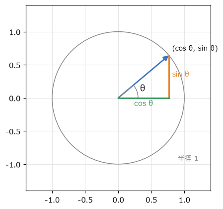
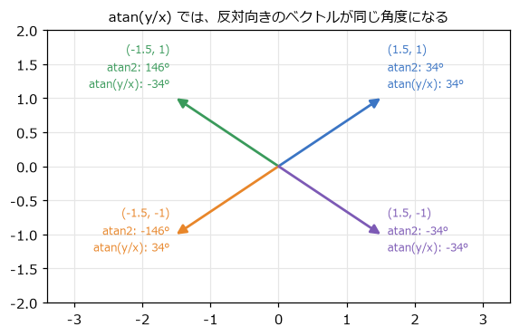
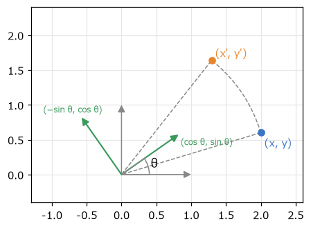
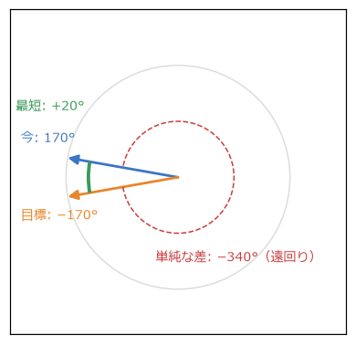
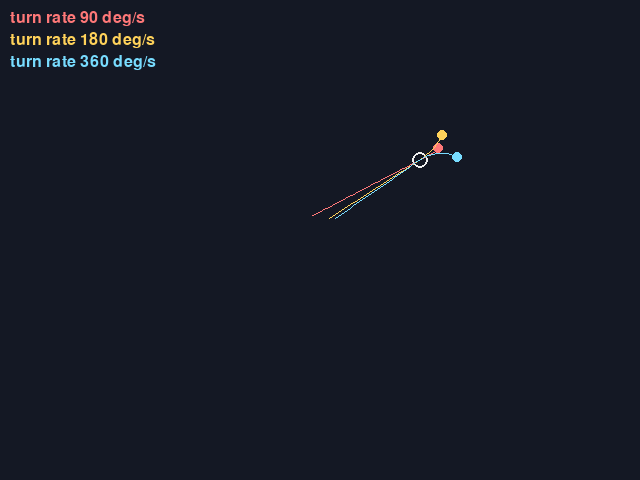

5. 角度と回転
砲台を敵の方へ向ける、衛星を円軌道で回す、ミサイルを少しずつ旋回させる。こうした「向き」と「回転」の計算には三角関数を使う。この章では、角度の表し方から、向きを求める atan2、点の回転、角度の補間までを扱う。
5.1. 度とラジアン
角度の単位には度（°）とラジアン（rad）がある。ラジアンは、半径 1 の円で、その角度に対応する弧の長さを角度とする単位である。円周の長さは \(2\pi\) なので、1 周は 360° = \(2\pi\) rad になる。
Python の math.sin や math.cos は、ラジアンで角度を受け取る。度で考えたいときは math.radians と math.degrees で変換する。\(2\pi\) は math.tau として用意されている。
プログラムの中ではラジアンで統一し、度は「人間が値を設定する定数」と「画面への表示」にだけ使うと、変換の書き忘れを防げる。なお、pygame-ce の Vector2.rotate は度で、Vector2.rotate_rad はラジアンで角度を受け取る。
5.2. 三角関数で円運動を書く
図 5.1 のように、半径 1 の円（単位円）の上で、x 軸から角度 \(\theta\) だけ回った点の座標は \((\cos\theta, \sin\theta)\) である。


図 5.1 単位円上の点の座標は (cos θ, sin θ)
半径を \(r\) にすれば \((r\cos\theta, r\sin\theta)\) になる。このように「半径と角度」で表した位置を極座標と呼び、「x と y」で表した位置（直交座標）に変換するには \(\cos\) と \(\sin\) を使う。
1def from_polar(radius: float, angle: float) -> pygame.Vector2:
2 """極座標（半径と角度）を直交座標のベクトルに変換する。"""
3 return pygame.Vector2(radius * math.cos(angle), radius * math.sin(angle))
角度を時間とともに一定の割合（角速度）で増やせば、円運動になる。turret.py では、砲台の周りを衛星が回っている。
1orbit_angle += ORBIT_SPEED * dt
2satellite = center + from_polar(ORBIT_RADIUS, orbit_angle)
同じ式で、向いている角度から「その向きの単位ベクトル」も作れる。角度 \(\theta\) の向きに速さ \(s\) で弾を撃つなら、速度は \((s\cos\theta, s\sin\theta)\) である。
画面座標では y 軸が下向きなので、角度を増やすと画面上では時計回りに回る。数学の教科書の図（反時計回り）とは逆になるが、式はそのまま使える。
5.3. atan2 で向きを求める
逆に、ベクトル \((x, y)\) が向いている角度を求めるには、逆三角関数を使う。\(\tan\theta = y / x\) なので \(\theta = \arctan(y / x)\) と考えたくなるが、これには 2 つの問題がある。
\(x = 0\)（真上や真下を向いている）のとき、0 で割ることになる。
\((x, y)\) と \((-x, -y)\) は \(y / x\) が同じなので、正反対の向きを区別できない（図 5.2）。

図 5.2 atan(y/x) と atan2(y, x) の違い
そこで、x と y を別々に受け取る math.atan2(y, x) を使う。atan2 は x と y の符号から向きを判断し、\(-\pi\) から \(\pi\) までの角度を返す。引数の順番が y、x であることに注意する。
1def angle_to(origin: pygame.Vector2, target: pygame.Vector2) -> float:
2 """origin から target を見た向きの角度（ラジアン）。x 軸の正の向きが 0 で、画面上では時計回りに増える。"""
3 return math.atan2(target.y - origin.y, target.x - origin.x)
turret.py では、この角度を使って砲身をマウスの方向へ向け、クリックするとその向きに弾を撃つ。
5.4. 回転の式と点の回転
点 \((x, y)\) を原点の周りに角度 \(\theta\) だけ回転させた点 \((x', y')\) は、次の式で求められる。
この式は、図 5.3 のように考えると覚えやすい。x 軸の単位ベクトル (1, 0) は回転すると \((\cos\theta, \sin\theta)\) に、y 軸の単位ベクトル (0, 1) は \((-\sin\theta, \cos\theta)\) に移る。点 \((x, y)\) は「(1, 0) を x 個、(0, 1) を y 個足したもの」なので、回転後は「回転した (1, 0) を x 個、回転した (0, 1) を y 個足したもの」になる。


図 5.3 回転の式は、回転した軸の組み合わせで表せる
1def rotate_point(x: float, y: float, angle: float) -> tuple[float, float]:
2 """点 (x, y) を原点の周りに angle ラジアン回転させる。"""
3 c, s = math.cos(angle), math.sin(angle)
4 return x * c - y * s, x * s + y * c
turret.py では、砲身の形を「右向きを 0 度とした座標」で定義しておき、描くたびに各頂点を rotate_point で回してから砲台の中心の位置を足している。このように、物の形を物自身を基準とした座標で定義し、回転と移動を加えてから描く考え方は、次の章で行列を使って一般化する。
原点以外の点 \(\mathbf{c}\) を中心に回すときは、いったん \(\mathbf{c}\) を原点に移し、回してから戻す。
ここで \(R(\theta)\) は、上の回転の式を表す。
5.5. 角度の補間と最短の回転
角度を扱うときに必ず出会う問題がある。「今 170° を向いていて、目標が −170° の方向にある」とき、どちらにどれだけ回ればよいだろうか。単純に引き算すると \(-170 - 170 = -340\) で、ほぼ 1 周逆向きに回ることになる。しかし実際には、図 5.4 のように反対向きに 20° 回るのが最短である。


図 5.4 170° から −170° への最短の回転は +20°
角度の差を常に \(-\pi\) 以上 \(\pi\) 未満（−180° 以上 180° 未満）の範囲に収めれば、最短の回転量になる。\(2\pi\) の整数倍を足し引きしても向きは変わらないので、剰余演算で範囲に収められる。
1def wrap_angle(angle: float) -> float:
2 """角度を -π 以上 π 未満の範囲に収める。"""
3 return (angle + math.pi) % math.tau - math.pi
1def angle_difference(current: float, target: float) -> float:
2 """current から target へ回るときの、最短の回転量（-π 以上 π 未満）。正なら角度が増える向きに回る。"""
3 return wrap_angle(target - current)
Python の % は、右辺が正なら結果も 0 以上になるので、負の角度でも正しく動く。C 言語などでは負の数の剰余が負になることがあるので、移植するときは注意する。
角度を補間する（たとえば、向きを目標へ少しずつ近づける）ときも、この最短の差を使う。
1def lerp_angle(a: float, b: float, t: float) -> float:
2 """角度 a から b へ、最短の向きに割合 t だけ進んだ角度を返す。"""
3 return a + angle_difference(a, b) * t
5.6. 旋回速度に上限がある追尾
ミサイルや敵の向きを一瞬で目標へ向けると、不自然に見えるうえ、避けることもできない。そこで、1 秒あたりに回れる角度（旋回速度）に上限を設ける。
1def move_toward_angle(current: float, target: float, max_delta: float) -> float:
2 """current を target へ、最短の向きに最大 max_delta だけ回した角度を返す。"""
3 diff = angle_difference(current, target)
4 if abs(diff) <= max_delta:
5 return target
6 return current + math.copysign(max_delta, diff)
math.copysign(max_delta, diff) は、diff と同じ符号を持つ大きさ max_delta の値を返す。つまり、最短の向きに max_delta だけ回す。残りの角度が max_delta 以下なら、目標の角度にそろえて止める。
homing.py では、旋回速度が 90 度毎秒、180 度毎秒、360 度毎秒の 3 発の弾がマウスを追いかける（図 5.5）。旋回速度が小さい弾は大回りになり、目標の周りを回り続けることもある。これは、一定の速さで進みながら旋回すると、回転半径（速さ ÷ 角速度）より内側には曲がれないためである。旋回速度の上限は、避けられるかどうかを決めるゲームの難易度のパラメーターになる。


図 5.5 homing.py の画面